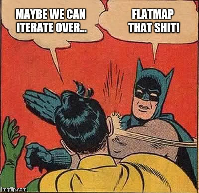

Category Theory

A category is a purely algebraic structure consisting of "objects" and "arrows" (morphisms) that connect those objects, much like a directed graph with nodes and edges between them. A category will have objects like X, Y, Z,etc. and arrows between objects. Importantly, arrows compose. Given an arrow f from X to Y, and another arrow g from Y to Z, their composition is an arrow from X to Z. There is also an identity arrow from every object to itself.
Summoner
1 2 3 | trait Summoner[D[_[_]]] { def apply[C[_]: D]: D[C] = implicitly[D[C]] } |
Implicitly
The scala Standard library provides a generic type class interface called implicitly
1 | def implicitly[A](implicit value: A): A = value |
Thus, we can simply use implicitly to summon any value from implicit scope. We have to just provide the right type to implicitly. What is more, we can take advantage of implicitly to test implicit calls that we can't tell for sure if in the current scope or not.
Functor
The real objective of a Functor is to lift a regular function. Therefore, we can think of a Functor as a trait which has the ability to "lift" an arrow that goes from A to B to another arrow that goes from C[A] to C[B].
1 2 3 4 5 6 | /** Bro, Do You Even Lift? */ trait SortOfFunctor[C[_]] { def lift1[A, B](ab: A => B): (C[A] => C[B]) // If we uncurry lift() we can rewrite it as: def lift2[A, B](ab: A => B)(ca: C[A]): C[B] } |
And now looking at lift2() we can transform it into something that we already know quite well: map(). And, most importantly, Functor is just a type constructor for which map can be implemented:
1 2 3 4 5 6 7 8 9 | trait Functor[C[_]] { def map[A, B](ca: C[A])(ab: A => B): C[B] } object Functor extends Summoner[Functor] // Without using a Summoner we would have had: // object Functor { // def apply[C[_]: Functor]: Functor[C] = implicitly[Functor[C]] // } |
Quote
Any type F with a function like map() is a Functor, with one additional restriction: the map function has to preserve the "structure" of the value it's mapping over. Thus map(x) preserves the structure of x, mofifying only the elements contained within, while the shape of the structure itself is left intact.
And now we can simply rewrite our initial lifting function using map():
1 | def lift(f: A => B): (F[A] => F[B]) = _ map f |
Visually, the previous operation could be represented by the following diagram (source):

Category Theory - Laws
In category theory, functors take the objects and morphisms of a category and map them to a different category. By definition, this new category must have an identity and the ability to compose morphisms, but we don't have to check that because the following laws must hold.
1 2 3 4 5 | // identity map(id) === id // composition compose(map(f), map(g)) === map(compose(f, g)) |
Monoid
In category theory, a monoid is a category with one object.
The Monoid is essentially the first purely algebraic data structure. This kind of algebraic data structures are the corner stone of the technique that gives us a ability to write polymorphic functions. A Monoid is made of:
- A type
T - A binary operation, which is associative, that takes two values of type
Tand combines them into one - A value
zero: Twhich is an identity for the associative operation
1 2 3 4 5 6 7 8 9 10 11 12 13 14 15 | trait Monoid[T] { // associativity // op(op(x, y), z) == op(x, op(y, z)) def op(x: T, y: T): T // identity // op(x, zero) == op(zero, x) == x def zero: T } // example val stringMonoid = new Monoid[String] { override def op(x: String, y: String): String = x + y override def zero: String = "" } |
Monad
The primary purpose of Monads is to let you compose code in for expressions (binding - i.e. to glue code together). Monads are like wrappers that provide us with two fundamental operations:
- identity (that we refer as unit in Scala - or pure)
- bind (flatMap in Scala)
Why do we need monads?
- We want to have the ability to use a boxing type (
F[_]-Option[String]), mainly because a function should return just one type and, for example, we have to attach a log message to the output value of a function - At the same time we'd like to consume our new boxing types without changing our preexistent code. Solution: let's have a special function to "connect"/"compose"/"link" functions. That way, we can, behind the scenes, adapt the output of one function to feed the following one.
g.flatMap(f)(connect/composegtof). We wantflatMapto getg's output, inspect it and, in case it isNonejust don't callfand returnNone; or on the contrary, extract the boxed value and feedfwith it.- Many other problems arise which can be solved using this same pattern: 1. Use a "box" to codify/store different meanings/values, and have functions like
gthat return those "boxed values". - Remarkable problems that can be solved using this technique are:
- having a global state that every function in the sequence of functions ("the program") can share: solution
StateMonad. - We don't like "impure functions": functions that yield different output for same input. Therefore, let's mark those functions, making them to return a tagged/boxed value:
IOmonad. - let the log of an operation be attached to the value that comes out from a computation: solution
WriterMonad.
- having a global state that every function in the sequence of functions ("the program") can share: solution
Review For-Comprehensions
As we stated while introducing Monads for expressions have a very deep correllation with this category. That's mainly because a for-comprehension is syntactic sugar for map, flatMap and filter operations on collections.
The general form is for (s) yield e
sis a sequence of generators and filtersp <- eis a generatorif fis a filter- If there are several generators (equivalent of a nested loop), the last generator varies faster than the first
- You can use
{ s }instead of( s )if you want to use multiple lines without requiring semicolons eis an element of the resulting collection
Example 1
1 2 3 4 | // list all combinations of numbers x and y where x is drawn from // 1 to M and y is drawn from 1 to N for (x <- 1 to M; y <- 1 to N) yield (x,y) |
is equivalent to
1 | (1 to M) flatMap (x => (1 to N) map (y => (x, y))) |
Translation Rules
A for-expression looks like a traditional for loop but works differently internally
for (x <- e1) yield e2 is translated to e1.map(x => e2)
for (x <- e1 if f) yield e2 is translated to for (x <- e1.filter(x => f)) yield e2
for (x <- e1; y <- e2) yield e3 is translated to e1.flatMap(x => for (y <- e2) yield e3)
This means you can use a for-comprehension for your own type, as long
as you define map, flatMap and filter.
Example 2
1 2 3 4 5 | for { i <- 1 until n j <- 1 until i if isPrime(i + j) } yield (i, j) |
is equivalent to
1 2 | for (i <- 1 until n; j <- 1 until i if isPrime(i + j)) yield (i, j) |
On flatMap

1 2 | map with T => M[R] flatten M[T] -------------------------> M[M[R]] -----------> M[R] |
Defining Monads
In order to define a Monad in Scala we need map(), flatMap() and a lifting method called unit. As we've already seen in the definition of Functors we could lift a value just using map(). But if we have to simply wrap an object into a new boxing type or wrapper F[_] we can define a new function that we call unit(), which is defined as follows:
1 | def unit[A](a: => A): F[A] |
Now, while observing very carefully that function we can compare it to what the apply method does already in the definition of a new object:
1 2 3 4 5 6 7 | // We define a generic Wrapper class class Wrapper[A] private (value: A) { ... } // Then we create a companion object which will also be shipped with a factory method that will create a new Wrapper for us object Wrapper { def apply[A](value: A): Wrapper[A] = new Wrapper(value) // Using apply() we're actually lifting A to Wrapper[A] } |
Basically, we created a new type Wrapper and then we attached to it a companion object that will give us the ability to create new wrappers using val w = Wrapper(value1) using a factory method. Now let's define the body of the Wrapper class, keeping in mind that in order to use for expressions over this class we need map() and flatMap().
1 2 3 4 5 6 7 8 9 | class Wrapper[A] private (value: A) { def map[B](f: A => B): Wrapper[B] = Wrapper(f(value)) def flatMap[B](f: A => Wrapper[B]): Wrapper[B] = f(value) } // The Companion object Wrapper { def apply[A](value: A): Wrapper[A] = new Wrapper(value) } |
Monads in Category Theory
In Category Theory, a Monad is a Functor equipped with a pair of "natural transformations" satisfying the laws of associativity and identity.
OK, now we have all the lego blocks that we actually need to define a Monad in Scala. Note that we define a Monad as a trait and that we extends Functor. Moreover, we add unit() defining it as pure() and then we override map(), which is already defined in Functor, but in this case we take advantage of unit() to lift a value to the boxing type. Also, we redefine map() using flatMap().
1 2 3 4 5 6 7 8 9 10 11 12 13 14 15 16 17 18 19 20 21 22 23 24 | trait Monad[C[_]] extends Functor[C] { def pure[A](a: => A): C[A] @inline def unit[A](a: => A): C[A] = pure(a) @inline def point[A](a: => A): C[A] = pure(a) override def map[A, B](ca: C[A])(ab: A => B): C[B] = flatMap(ca)(a => pure(ab(a))) // We needed this helper method to compose functions // def helper[A, B](ca: C[A], acb: A => C[B]): C[B] // From Helper to FlatMap def flatMap[A, B](ca: C[A])(acb: A => C[B]): C[B] // Curried version of helper method // haskell bind @inline def bind[A, B](ca: C[A])(acb: A => C[B]): C[B] = flatMap(ca)(acb) @inline def >>=[A, B](ca: C[A])(acb: A => C[B]): C[B] = flatMap(ca)(acb) // >>= Haskell Logo } // Monad Type class - remember that Summoner defines an apply method // that corresponds to unit. object Monad extends Summoner[Monad] // extending Summoner is the same as // object Monad { def apply[C[_]: Monad]: Monad[C] = implicitly[Monad[C]] } } |
As you might have supposed unit[MyType](x) performs the wrapping into a Monad[MyType] . It's pretty clear that we defined the method unit() outside the trait body because we don’t want to invoke it upon the existing monadic object.
Monad laws
If we have some basic value x , a monad instance m (holding some value) and functions f and g of type
Int → M[Int] , we can write the laws as follows:
- left-identity law:
unit(x).flatMap(f) == f(x) - right-identity law:
m.flatMap(unit) == m - associativity law:
m.flatMap(f).flatMap(g) == m.flatMap(x ⇒ f(x).flatMap(g))
The only correct definition of Monad
A monad is an implementation of one of the minimal sets of monadic combinators, satisfying the laws of associativity and identity.